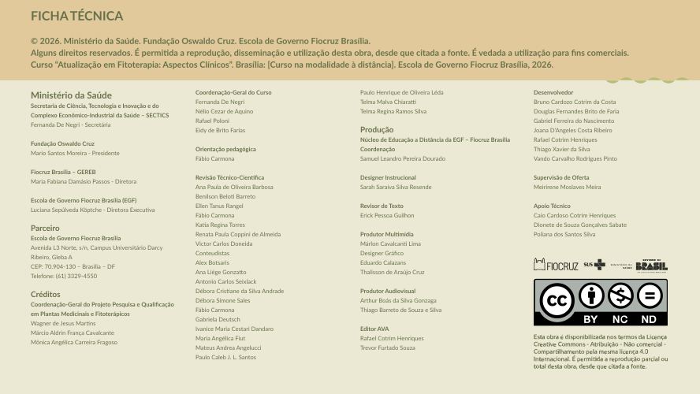

<div>
    
</div>

<!-- <section class="ficha-tecnica">

    <header class="ft-topo">
        <h2>FICHA TÉCNICA</h2>

        <p>© 2025. Ministério da Saúde. Fundação Oswaldo Cruz. Escola de Governo Fiocruz Brasília.</p>

        <p>
            Alguns direitos reservados. É permitida a reprodução, disseminação e utilização desta obra,
            desde que citada a fonte. É vedada a utilização para fins comerciais.
        </p>

        <p>
            Curso “Atualização em Fitoterapia: Aspectos Clínicos”.<br>
            Brasília: Curso na modalidade à distância. Escola de Governo Fiocruz Brasília, 2025.
        </p>
    </header>

    <div class="ft-conteudo">

        <div class="ft-coluna">

            <h3>Ministério da Saúde</h3>
            <p>Secretaria de Ciência, Tecnologia e Inovação e do<br>
                Complexo Econômico-Industrial da Saúde – SECTICS</p>
            <p>Fernanda De Negri<br><strong>Secretária</strong></p>

            <h3>Fundação Oswaldo Cruz</h3>
            <p>Mario Santos Moreira<br><strong>Presidente</strong></p>

            <h3>Fiocruz Brasília – GEREB</h3>
            <p>Maria Fabiana Damásio Passos<br><strong>Diretora</strong></p>

            <h3>Escola de Governo Fiocruz Brasília (EGF)</h3>
            <p>Luciana Sepúlveda Köptche<br><strong>Diretora Executiva</strong></p>

            <h3>Parceiros</h3>
            <p>
                Escola de Governo Fiocruz Brasília<br>
                Avenida L3 Norte, s/n<br>
                Campus Universitário Darcy Ribeiro, Gleba A<br>
                CEP: 70.904-130 – Brasília/DF<br>
                Telefone: (61) 3329-4550
            </p>

            <h3>Créditos</h3>
            <p>Coordenação-Geral do Projeto Fortalecimento do Acesso a Plantas Medicinais e Fitoterápicos no SUS.</p>
            <ul>
                <li>Wagner de Jesus Martins</li>
                <li>Márcio Aldrin França Cavalcante</li>
                <li>Mônica Angélica Carreira Fragoso</li>
            </ul>

        </div>

        <div class="ft-coluna">

            <h3>Coordenação-Geral do Curso</h3>
            <ul>
                <li>Fernanda De Negri</li>
                <li>Marco Aurélio Pereira</li>
                <li>Rafael Poloni</li>
                <li>Eidy de Brito Farias</li>
            </ul>

            <h3>Orientação Pedagógica</h3>
            <p>Fábio Carmona</p>

            <h3>Revisão Técnico-Científica</h3>
            <ul>
                <li>Ana Paula de Oliveira Barbosa</li>
                <li>Belmiro Morgado Junior</li>
                <li>Benilson Beloti Barreto</li>
                <li>Ellen Tanus Rangel</li>
                <li>Fábio Carmona</li>
                <li>Kátia Regina Torres</li>
                <li>Luciane Regina Mathias Rosa</li>
                <li>Renata Paula Coppini de Almeida</li>
                <li>Victor Carlos Doneida</li>
            </ul>

            <h3>Conteudistas</h3>
            <ul>
                <li>Alex Botsaris</li>
                <li>Ana Liège Gonzatto</li>
                <li>Antonio Carlos Seixlack</li>
                <li>Débora Cristiane da Silva Andrade</li>
                <li>Débora Simone Sales</li>
                <li>Fábio Carmona</li>
                <li>Gabriela Deutsch</li>
                <li>Ivanice Maria Cestari Dandaro</li>
                <li>Maria Angélica Fiut</li>
                <li>Mateus Andrea Angelucci</li>
                <li>Paulo Caleb J. L. Santos</li>
            </ul>

        </div>

        <div class="ft-coluna">

            <h3>Produção</h3>
            <p>Núcleo de Educação a Distância da EGF – Fiocruz Brasília</p>

            <h4>Coordenação</h4>
            <p>Samuel Leandro Pereira Dourado</p>

            <h4>Designer Instrucional</h4>
            <p>Sarah Saraiva Silva Resende</p>

            <h4>Revisor de Texto</h4>
            <p>Erick Pessoa Guilhon</p>

            <h4>Produtor Multimídia</h4>
            <p>Marlon Cavalcanti Lima</p>

            <h4>Designer Gráfico</h4>
            <p>Eduardo Calazans<br>Thalisson de Araújo Cruz</p>

            <h4>Produtor Audiovisual</h4>
            <p>
                Arthur Boás da Silva Gonzaga<br>
                Thiago Barreto de Souza e Silva
            </p>

            <h4>Editor AVA</h4>
            <p>Trevor Furtado Souza<br>Rafael Cotrim Henriques</p>

        </div>

        <div class="ft-coluna">

            <h3>Desenvolvedor</h3>
            <ul>
                <li>Bruno Cardozo Cotrim da Costa</li>
                <li>Douglas Fernandes Brito de Faria</li>
                <li>Gabriel Ferreira do Nascimento</li>
                <li>Joana D’Angeles Costa Ribeiro</li>
                <li>Thiago Xavier da Silva</li>
                <li>Vando Carvalho Rodrigues Pinto</li>
            </ul>

            <h3>Supervisão de Oferta</h3>
            <p>Meirirene Moslaves Meira</p>

            <h3>Apoio Técnico</h3>
            <ul>
                <li>Caio Cardoso Contrim Henriques</li>
                <li>Dionete de Souza Gonçalves Sabate</li>
                <li>Poliana dos Santos Silva</li>
            </ul>

            <div class="licenca">
                <p>
                    Esta obra é disponibilizada nos termos da Licença
                    Creative Commons – Atribuição – Não comercial –
                    Compartilhamento pela mesma licença 4.0 Internacional.
                    É permitida a reprodução parcial ou total desta obra,
                    desde que citada a fonte.
                </p>
            </div>

        </div>

    </div>

</section>
<style>
    .ficha-tecnica {
        font-family: Arial, Helvetica, sans-serif;
        font-size: 12px;
        background-color: #f3f1df;
        color: #5f6f4d;
        padding: 0;
    }

    /* TOPO */
    .ft-topo {
        background-color: #e5d3a9;
        padding: 1px 31px;
    }

    .ft-topo h1 {
        margin: 0 0 12px 0;
        font-size: 28px;
        letter-spacing: 1px;
        font-weight: bold;
    }

    .ft-topo p {
        margin: 6px 0;
        /* font-size: 15px; */
        /* line-height: 1.5; */
    }

    /* CONTEÚDO */
    .ft-conteudo {
        display: grid;
        grid-template-columns: repeat(4, 1fr);
        gap: 32px;
        padding: 40px 48px;
    }

    /* COLUNAS */
    .ft-coluna h3 {
        margin: 0 0 8px 0;
        /* font-size: 16px; */
        font-weight: bold;
    }

    .ft-coluna h4 {
        margin: 16px 0 4px 0;
        /* font-size: 15px; */
        font-weight: bold;
    }

    .ft-coluna p {
        /* margin: 0 0 12px 0; */
        /* font-size: 14px; */
        /* line-height: 1.4; */
    }

    .ft-coluna strong {
        font-weight: bold;
    }

    /* LISTAS */
    .ft-coluna ul {
        margin: 0 0 16px 0;
        padding-left: 18px;
    }

    .ft-coluna li {
        font-size: 14px;
        line-height: 1.4;
        margin-bottom: 4px;
    }

    /* LICENÇA */
    .licenca {
        margin-top: 24px;
        font-size: 13px;
        line-height: 1.4;
    }

    /* RESPONSIVO */
    @media (max-width: 1200px) {
        .ft-conteudo {
            grid-template-columns: repeat(2, 1fr);
        }
    }

    @media (max-width: 600px) {
        .ft-conteudo {
            grid-template-columns: 1fr;
        }

        .ft-topo,
        .ft-conteudo {
            padding: 24px;
        }
    }
</style> -->